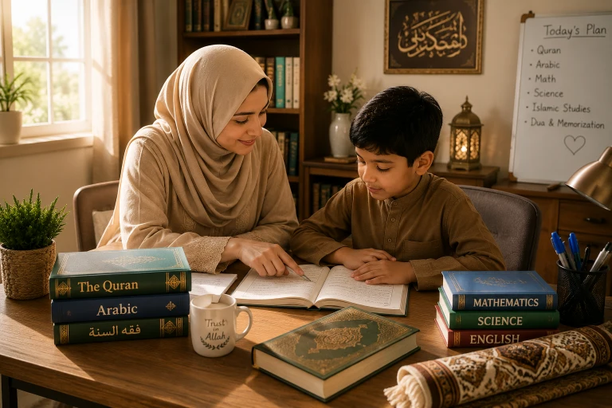
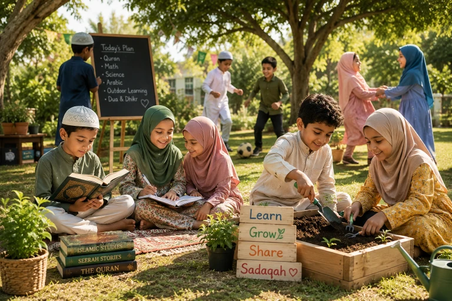

Every year, thousands of Muslim parents in the West face a difficult decision: how to protect their children's Iman (faith) while ensuring they receive a high-quality education in a public school system that often conflicts with Islamic values. Islamic homeschooling has emerged as a powerful, beautiful solution. It allows you to tailor your child's education around the Salah, infuse every subject with Tawheed (the Oneness of Allah), and build a deep, unshakeable Islamic identity. In this comprehensive guide, we will walk you through everything you need to know to start your Islamic homeschooling journey successfully.
📖 In This Complete Guide, You'll Learn:
- Why thousands of Muslim parents are choosing homeschooling over public schools
- The 5 essential steps to legally and practically start homeschooling
- How to choose the best Islamic and secular curriculum for your child
- How to structure a daily routine that balances Deen and Dunya
- The truth about socialization (and how to do it right)
- Common homeschooling mistakes to avoid in your first year
🔑 Key Takeaways
- Homeschooling is 100% legal in the US, UK, and Canada, but you must follow local registration rules.
- You don't need a teaching degree; you need dedication, patience, and the right resources.
- Integrate Islamic values into secular subjects (e.g., teaching math through Zakat calculations).
- Socialization is a myth-buster: homeschoolers often have richer, more diverse social lives.
- Start small, be consistent, and remember that tarbiyah (character building) is your primary goal.

Why Muslim Parents Are Choosing Homeschooling
The decision to homeschool is rarely made lightly. For Muslim families in the West, it is often driven by a deep desire to protect their children's spiritual and moral development. Here are the top reasons parents are making the switch:
- Protecting Aqeedah (Faith): Public schools often promote worldviews that contradict Islamic teachings. Homeschooling allows you to filter what enters your child's heart and mind. ✨ Related: Learn how to raise children who love Allah through intentional education.
- Flexible Schedule Around Salah: Instead of rushing to fit prayer into a 15-minute lunch break, your child's day revolves around the five daily prayers, making them the anchor of their life. This aligns perfectly with our guide on teaching Salah to children.
- Customized Learning Pace: If your child is advanced in math but needs more time in reading, you can adjust. No child is left behind or held back.
- Avoiding Negative Peer Pressure: Bullying, inappropriate social media trends, and early exposure to mature themes are rampant in schools. Homeschooling provides a safe, controlled environment during their formative years. For strategies on handling peer pressure, see our article on dealing with peer pressure in Muslim kids.
- Stronger Family Bonds: Spending more time together builds a deep connection between siblings and parents that is hard to achieve when everyone is busy with school and extracurriculars.
Step 1: Understand the Legal Requirements
Before you buy any books, you must ensure you are following the law. Homeschooling is legal everywhere in the US, UK, and Canada, but the rules vary wildly.
In the United States:
Regulations are state-by-state. Some states (like Texas and Oklahoma) are very relaxed and require almost no paperwork. Others (like New York, Pennsylvania, and Massachusetts) require you to submit a letter of intent, provide a portfolio of your child's work, and administer annual standardized tests. Action Step: Visit the Home School Legal Defense Association (HSLDA) website and look up your specific state laws.
In the United Kingdom:
If your child is already enrolled in a school, you must send a formal letter of withdrawal to the headteacher. If they have never been to school, you simply need to write to your local authority stating your intention to homeschool. You may be asked to provide a brief educational philosophy.
In Canada:
Regulations vary by province. In most provinces (like Ontario and Alberta), you must notify your local school board or the Ministry of Education. Some provinces require an approved learning plan or periodic check-ins with a certified teacher.
Join a local Muslim homeschooling Facebook group. Parents who have already navigated the legal process in your specific area will be your best resource and biggest support system.
Step 2: Choose the Right Curriculum (Deen & Dunya)
One of the biggest advantages of homeschooling is that you don't have to use a single, boxed curriculum. You can mix and match to create the perfect blend of Islamic and secular education.
For Islamic Studies (Deen):
- Quran & Tajweed: Consider online tutors (like Qari.io or Studio Arabiya) or local mosque classes if you aren't confident in your own Tajweed. Make Quran learning enjoyable with our guide on making Quran learning enjoyable for kids.
- Islamic Studies & Seerah: Popular curricula include Noor Kids (great for character building), IQRA Network, and Weekend Learning Publishers.
- Arabic Language: Gateway to Arabic or Madinah Arabic Books are excellent, structured choices.
For Secular Subjects (Dunya):
- Math: Singapore Math (highly recommended for deep understanding), Khan Academy (free and excellent), or Math-U-See.
- Science & History: Mystery Science, Time4Learning, or Oak National Academy (UK).
- Language Arts/English: All About Reading, Writing Strands, or Brave Writer.
Don't keep Deen and Dunya separate. When teaching math, use examples involving Zakat or Sadaqah. When teaching history, highlight the contributions of Muslim scientists like Ibn Sina and Al-Khwarizmi. Show your child that Islam is a complete way of life.
Step 3: Create a Dedicated Learning Space
You don't need a fancy classroom, but you do need a dedicated space that signals to your child's brain: "It's time to focus."
- Minimize Distractions: Keep the space away from the TV and high-traffic areas. If you live in a small apartment, use a room divider or a specific table that is only used for school.
- Organize Resources: Use bookshelves, bins, and labels. Let your child have access to their own books and supplies to foster independence.
- Add Islamic Elements: Hang a beautiful calligraphy of the Bismillah, a map of the Muslim world, or a periodic table that includes Islamic contributions. Make the space feel like a Muslim home. This connects to our guide on creating an Islamic environment at home.
- Ensure Good Lighting: Natural light is best for focus and mood. If that's not possible, invest in good quality, warm LED lamps.
Step 4: Structure Your Daily Routine
The beauty of homeschooling is flexibility, but children thrive on routine. Here is a sample daily schedule for an elementary-aged child (Ages 6-9):
- 7:00 AM: Wake up, Fajr prayer, morning Adhkar, and a healthy breakfast.
- 8:00 AM: Quran recitation and memorization (Hifz) — 30 to 45 minutes.
- 8:45 AM: Core Subject 1: Math (45 minutes).
- 9:30 AM: Break, snack, and Dhuha prayer.
- 9:45 AM: Core Subject 2: Language Arts / Reading (45 minutes).
- 10:30 AM: Islamic Studies or Arabic (30 minutes).
- 11:00 AM: Dhuhr prayer and Lunch.
- 12:00 PM: Science, History, or Art (45 minutes).
- 12:45 PM: Free reading, educational games, or outdoor play.
- After Asr: Extracurriculars (sports, co-op, library, or playdates).
- After Maghrib: Family time, dinner, and winding down for sleep.
A 6-year-old only needs about 2 to 3 hours of focused academic time. Don't try to replicate a 7-hour school day at home. You will both burn out!
Step 5: Solve the "Socialization" Myth
The #1 question every homeschooling parent gets is: "But what about socialization?" This is a myth based on the outdated idea that socialization only happens in a classroom with 30 kids of the exact same age.
In reality, homeschooled Muslim children often have better social skills because they interact with people of all ages in the real world. Here is how to ensure your child is well-socialized:
- Join a Muslim Homeschool Co-op: These are groups of families who meet weekly for group classes, field trips, and socialization. Search Facebook for "[Your City] Muslim Homeschoolers".
- Participate in Community Sports: Soccer leagues, swimming classes, and martial arts are great for teamwork and discipline.
- Volunteer Together: Serving at a local food bank or helping at the mosque teaches empathy and connects them with the wider community.
- Library Programs & Clubs: Most local libraries offer free coding clubs, book clubs, and STEM workshops for kids.
Common Mistakes to Avoid
Don't make your child sit at a desk for 6 hours. Homeschooling is one-on-one; it's much faster. Embrace the flexibility and let them learn through play, projects, and real-life experiences.
Homeschooling can be exhausting. If you are spiritually depleted, you cannot pour into your children. Protect your own Salah, Quran time, and rest. You cannot give what you do not have.
Every child blooms at their own pace. If your neighbor's child is reading at age 4 and yours isn't until 7, that's okay. Focus on your child's unique strengths and love for learning.

Frequently Asked Questions
🌱 Take the First Step Today
You don't have to have everything figured out before you start. Begin by researching your local laws and joining one Muslim homeschooling Facebook group today. Allah will make the path easy for those who strive for the sake of their children's Deen.
Are you considering homeschooling? What is your biggest fear or question? Let us know!
Final Thoughts
Islamic homeschooling is not just an educational choice; it is an act of worship. It is a daily commitment to raising a generation that knows Allah, loves His Prophet (PBUH), and is equipped to be a positive force in the world. There will be hard days. There will be days when you question your sanity. But there will also be beautiful moments — like hearing your child recite a new Surah unprompted, or watching them help a sibling with patience — that will remind you why you started.
Trust in Allah's plan. Seek knowledge, surround yourself with a supportive community, and remember that your sincere intention to raise righteous children is enough. May Allah bless your homeschooling journey and make your children the coolness of your eyes. Ameen.